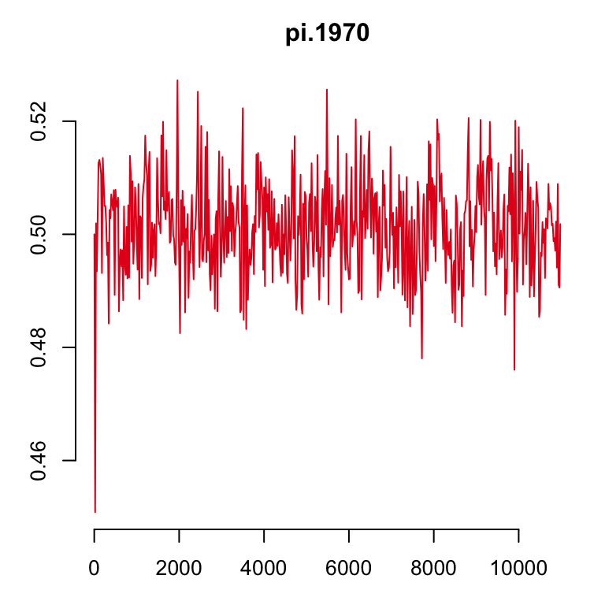

Introduction
There are three possible shape arguments in basta. These are simple, Makeham and bathtub. The simple argument specifies that the model should be fitted using the unaltered functional form for mortality (so far, this has been Gompertz). The other two arguments, Makeham and bathtub are modifiers to the underlying model adding in a term for age-independent mortality and an early-life decline in age-specific mortality respectively . If you’ve been working your way through these exercises you will have already fitted a Gompertz model with a simple shape - it is the default argument. This section will briefly run through the other two options.
Variations on the Gompertz - the bathtub shape argument
Aficionados of the Gompertz function will already know that the model, although used to model mortality in many species, is not well suited to examining mortality before the age of maturity. This is because it does not allow for infant/juvenile mortality, which typically manifests as high mortality early in life, which declines with age. Thus, over the whole life course of a typical mammal, mortality starts high, declines with age towards maturity, and then increases again. One way of accounting for this kind of trajectory is to use a bathtub model such as the Siler model. This model features two Gompertz functions: a declining Gompertz function to capture the juvenile phase, and an increasing one after maturity which captures the senescence phase.
The Makeham argument
But what if you are modelling mortality from maturity? In this case you may wish to check on the addition of a term for age-independent mortality. This is known as a Makeham term and can be specified as a shape argument in the basta model (shape = "Makeham). This adds a constant to the Gompertz model (which would then be referred to as a “Gompertz-Makeham” model). Note that the Siler model described above also features a term for age-independent mortality.
Try fitting BaSTA models with these two variations.
First the Gompertz-Makeham model:
gmnc <- basta(dat, studyStart = 1970, studyEnd = 2000,
model = "GO", shape = "Makeham")Secondly the Gompertz-bathtub model (also known as a Siler model):
gbnc <- basta(dat, studyStart = 1970, studyEnd = 2000,
model = "GO", shape = "bathtub")Take a look at the model summaries, and the trajectory plots produced.
summary(gbnc)
#>
#> Output from BaSTA version 1.9.4
#>
#> Call:
#> Model : GO
#> Shape : bathtub
#> Covars. structure : fused
#> Minimum age : 0
#> Cat. covars. :
#> Cont. covars. :
#>
#> Model settings:
#> niter burnin thinning nsim
#> 11000 1001 20 1
#>
#> Jumps and priors:
#> Jump.sds Prior.means Prior.sds
#> a0 2.56994 -2.00 1
#> a1 4.59737 0.01 1
#> c 0.02222 0.00 1
#> b0 0.20560 -3.00 1
#> b1 0.01576 0.01 1
#>
#> Mean Kullback-Leibler
#> discrepancy calibration (KLDC):
#> KLDC was not calculated due to insufficient number
#> of simulations to estimate convergence.
#>
#> Coefficients:
#> Estimate StdErr Lower95%CI Upper95%CI SerAutocor UpdateRate
#> a0 -4.245016 0.623819 -5.543239 -3.15826 0.02081 0.2395
#> a1 1.382111 0.786008 0.030088 3.00732 0.13548 0.2457
#> c 0.009247 0.007835 0.000261 0.02877 0.66771 0.2571
#> b0 -3.414223 0.221632 -3.947251 -3.07668 0.86703 0.2477
#> b1 0.121239 0.014781 0.096193 0.15286 0.84311 0.2482
#> pi.1970 0.503127 0.008309 0.486666 0.51871 0.14200 1.0000
#>
#> Convergence:
#>
#> Convergence calculations require more than one run.
#> To estimate potential scale reduction run at least two simulations.
#>
#> DIC:
#> DIC was not calculated due to insufficient number of simulations to estimate convergence.plot(gbnc, plot.trace = FALSE)summary(gmnc)
#>
#> Output from BaSTA version 1.9.4
#>
#> Call:
#> Model : GO
#> Shape : Makeham
#> Covars. structure : fused
#> Minimum age : 0
#> Cat. covars. :
#> Cont. covars. :
#>
#> Model settings:
#> niter burnin thinning nsim
#> 11000 1001 20 1
#>
#> Jumps and priors:
#> Jump.sds Prior.means Prior.sds
#> c 0.02142 0.00 1
#> b0 0.20100 -3.00 1
#> b1 0.01709 0.01 1
#>
#> Mean Kullback-Leibler
#> discrepancy calibration (KLDC):
#> KLDC was not calculated due to insufficient number
#> of simulations to estimate convergence.
#>
#> Coefficients:
#> Estimate StdErr Lower95%CI Upper95%CI SerAutocor UpdateRate
#> c 0.00967 0.007108 0.0003509 0.02718 0.53990 0.2634
#> b0 -3.36946 0.181641 -3.7720541 -3.06100 0.81608 0.2481
#> b1 0.11920 0.012284 0.0964783 0.14694 0.82251 0.2355
#> pi.1970 0.50306 0.007733 0.4875000 0.51779 0.06829 1.0000
#>
#> Convergence:
#>
#> Convergence calculations require more than one run.
#> To estimate potential scale reduction run at least two simulations.
#>
#> DIC:
#> DIC was not calculated due to insufficient number of simulations to estimate convergence.plot(gmnc, plot.trace = FALSE)
The plots are very similar. So which is the best model? We come on to that in the next section.